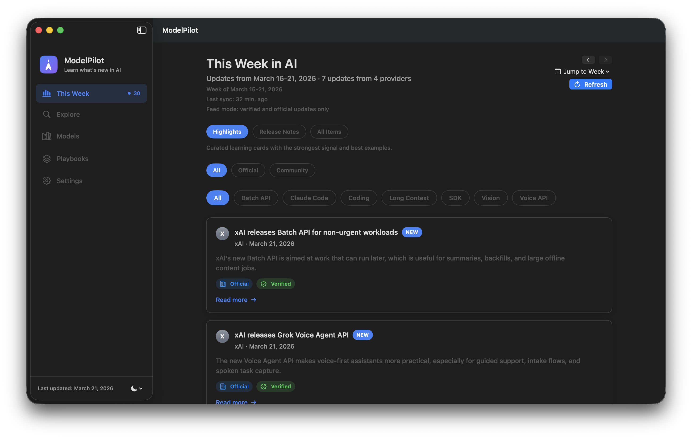
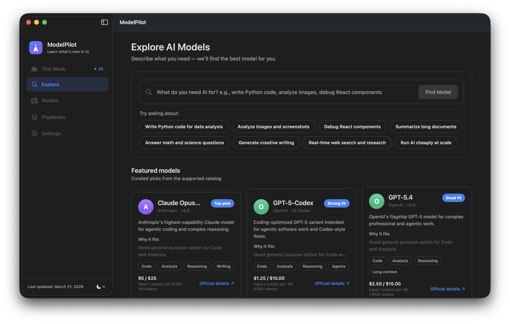
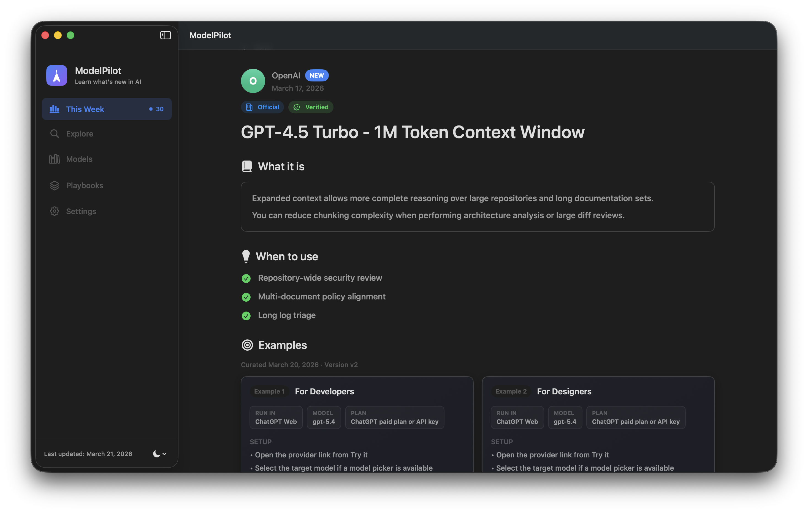
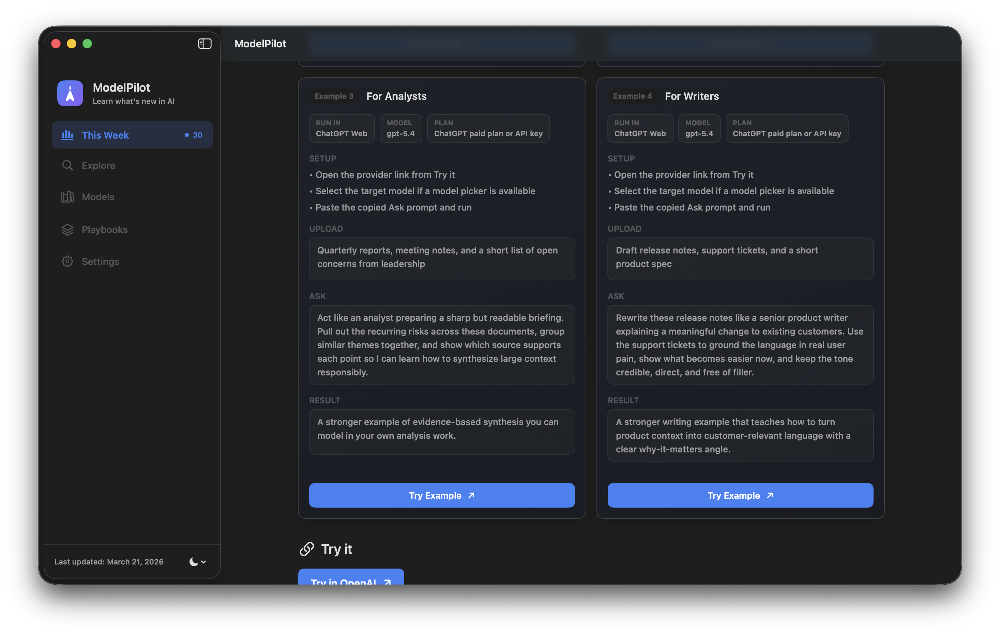

This Week
Scan the updates that matter now, with enough context to act without reading every launch thread.
Model release intelligence for people shipping with AI
ModelPilot turns fast-moving model launches into a calmer weekly surface for developers, designers, analysts, and writers who need to decide what changed and what to try next.

This Week
Highlights, full feed, trust labels, and weekly context in one fast scan.
What it does
Scan the updates that matter now, with enough context to act without reading every launch thread.
Compare models by intent and capability so you can choose faster and with fewer blind spots.
Curate overrides, validate changes, and keep the catalog aligned with a real operator workflow.
Inside the app
The app combines weekly updates, model discovery, and detailed runnable examples in a single macOS workflow.

Explore
Search by intent, compare fit, and move from need to candidate faster.

Detail
Each update carries context, usage guidance, and editorial framing.

Examples
Runnable examples show setup, ask, and outcome instead of vague feature claims.
Support and trust
ModelPilot keeps the utility links visible because support and privacy are part of the product, not afterthoughts.